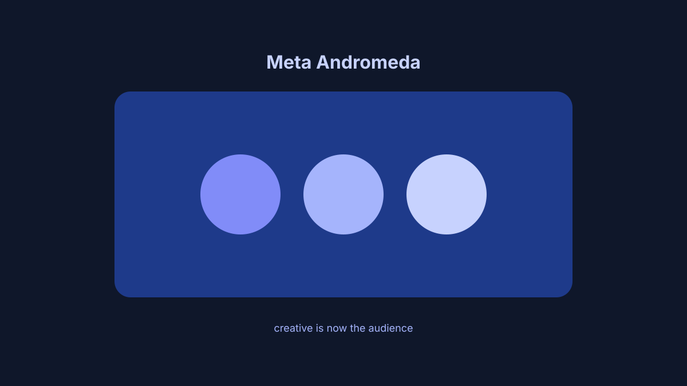

Meta's Andromeda Algorithm: Your Creative Is Now Your Audience
June 9, 2026 • Paid Media • 7 min read
If your Meta Ads accounts are seeing rising CPMs despite stable spend, or your detailed interest targeting isn't performing the way it used to, you are not imagining things. Meta's delivery system has undergone a fundamental architectural shift — Project Andromeda — now fully embedded across most campaign objectives.
Meta's algorithm no longer starts with your audience selection. It starts with your creative. Andromeda evaluates imagery, copy, hook and format first, then predicts which users are most likely to respond. Manual interest targeting still exists, but it functions more as a guardrail than a targeting engine.
How Andromeda actually works
Traditional delivery worked from the outside in: you defined an audience, and Meta served ads within that pool. Andromeda inverts that. A creative that speaks specifically to a defined buyer finds that buyer more efficiently than a generic ad pointed at a tightly constructed interest stack. A vague or identical-to-the-rest creative gives Andromeda weak signal and produces inefficient delivery.
The three levers that matter now
Creative volume and diversity. Winning accounts run 15 to 20 active ads per campaign with meaningfully different hooks and formats — not the same visual resized for Stories and Feed.
Campaign structure simplification. Advantage+ Shopping for ecommerce; Advantage+ Audience for lead gen. Heavy manual segmentation fights how Andromeda wants to operate.
Signal quality. Pixel and Conversions API together. Event Match Quality above 7 is healthy; below 6 means noisy data.
What to stop doing
Stop building elaborate interest stacks for prospecting. Stop running the same creative for more than four to six weeks without variation. Stop treating campaign-structure fiddling as the primary lever — audit creative first.
If your Meta accounts are seeing CPM pressure or learning-phase instability — reach out to NovaReach.